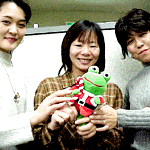
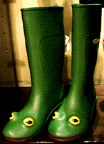
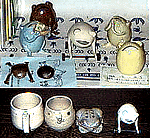
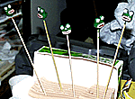

ゲーセンでカエルサンタを釣ろう！ 【福岡発=らぁめん大魔王様】先日、妻と博多駅横の福岡交通センタービルのゲームセンターへ行ったときに妻がUFOキャッチャーで手に入れたものです。一回目で失敗し、二回目に成功したので経費４００円のカエルサンタです。なぜ、カエルがサンタの格好をさせられているのかは謎です。また、カエルのみでは味気ないので三人のモデルと一緒に写った写真もお送りします。ちなみに妻はカエラーではありません。それでは失礼いたします。
【全国かえる奉賛会】４００円を投入して、カエルサンタを釣り上げるとは、すでに心はカエラーである。それにしても大王は、UFOキャッチャーがどへたなので、カエルものを釣ってほしいときは、らぁめん大魔王の妻に依頼することにしよう！！モデルとともにカエルを撮影するのは、素晴らしいぞ！カエルを手にすると、みんなが笑顔になる、という定説を裏付けるものだぞーっ！
冬もカエル全開！カエル雨靴も出現！ 【福岡発=げこげこ大王直筆】冬眠している場合じゃないぞー。クリスマスプレゼントを楽しみにしているガキ様に朗報がある。
福岡市の非カエル系ショップには、クリスマスプレゼントとして、このカエル雨靴が、販売されていたのだ。フランス製で、お値段は３５００円だ。カエル好きの子供は、いまのうちからサンタクロースに『今年のクリスマスプレゼントは、カエル雨靴にしてほしい』と、くどいくらいに親に頼んでおこう！
キリスト教徒でない家庭のガキは、親を通じて大黒様に依頼しておこう！大黒様がずた袋にお土産をたくさん詰めて、宝船でやってくるであろう！ 作品展でカエル陶器「すすむ君」！ 【東京発=伊藤正勝、薫同志記者】東京ビッグサイトで行われたデザインフェスタで境沢典子さんの新作「すすむ君」（手足に車を付けて伏せているのがすすむ君です）を入手しました。その他にもPico Hooさんのカエル作品を入手しました。カエルの中にカエルが居る香立てや立体的なカエルが付いているマグカップ、茶碗等が出展されていました。
デザインフェスタは既に終わってしまいましたが境沢さんの作品は11月30日(火)〜12月5日(日)に表参道Gallery Kowaで行われる「土皮木五人色作品展(作家敬称略：荒川由樹子、大田曜子、小島厚子、大塚卓、境沢典子(カエル作者））」で出品される予定です。会場は、東京都渋谷区神宮前4-12-5-104(最寄り駅 JR原宿駅）です。関東近県在住や、偶然出張や旅行で東京に出てくる機会に恵まれたカエラーは足を運びましょう。
エナメル仕上げの精緻なカエル！【北九州発=NIKOちゃん大魔王同志記者】暖冬列島のカエラーは元気デスね。１１月２１日号でティファニーのカエルイヤリングの記事ガありましたが、不況風吹いてる中、『エナメル仕上げの精緻なカエル』を通販カタログに発見。「ティファニーをはじめ高級宝飾店でも取り扱われているメンズアクセサリーのトップメーカー、サツルノ社製。スターリングシルバーで造形シタ精巧なカエルを、美しいエナメルで仕上げた逸品です。『無事に帰る』など、縁起かつぎにも。」という広告。幅２．９×奥行３×厚さ１．５ｃｍ/約２０ｇ/イタリア製。こちらは、チャント金額明示。１６０００円 結構重厚、精緻、且つ、写真ではソコハカトナキ愛嬌もあり。ティファニーの金額不明の恐怖のイヤリングがコワイ方にお勧め出来そう。元気なカエラーのよきクリスマスを祈りつつ。
 77777ゲットのモロー寺井師クリスマスモローを製造中！【東京発=モロー寺井同志記者】いつもモローをご贔屓いただきありがとうございます。さて、クリスマススペシャルストラップと２０００年の記念カードを製作中です！クリスマスに間に合うか？写真はカード用のモロー制作現場です。どんなものかはできてのお楽しみ。【全国かえる奉賛会】カエルカウンタ７７７７７人目をゲットしたのは、モロー父・寺井師だった。大王様が、昼間に７７７７５人目になってしまい、『ああっと自分で踏んではいけないなあ』と退出した直後に、偶然にもゲットしたようです！。寺井師には、記念品を贈呈します。 投稿採用者に武功カエル徽章を授与！ |
かえる古新聞過去に取り上げた記事を見出し付きで一覧したい人は、ここをクリック◆創刊号を見る◆先週号を見る◆話題の号を見る◆かえる新聞の昔を読む
|
私も入っています。。全国かえる奉賛会
大王様に会うには、このバナーをクリック。ずっと奥に写真館があるぞ。全国かえる奉賛会に入会するには、自分のホームページのどこかに、下の部分を追加するとバナーがリンク付きで表示されるぞ。どんどん入会しましょー |


|